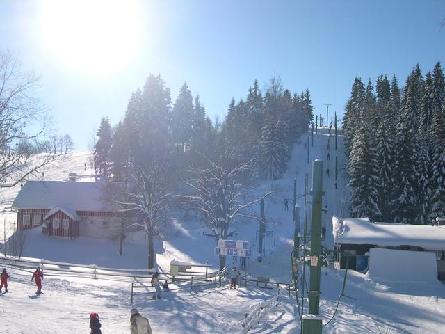
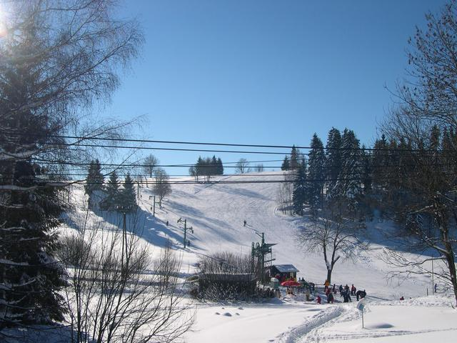
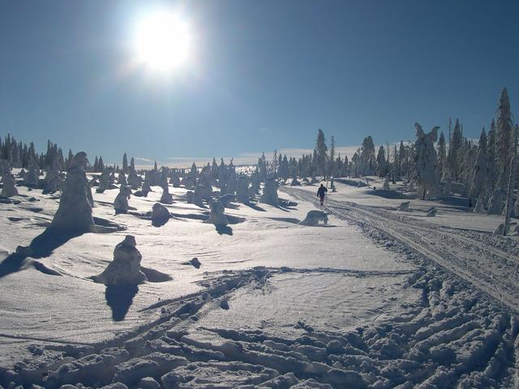
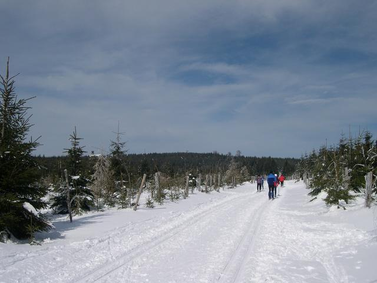
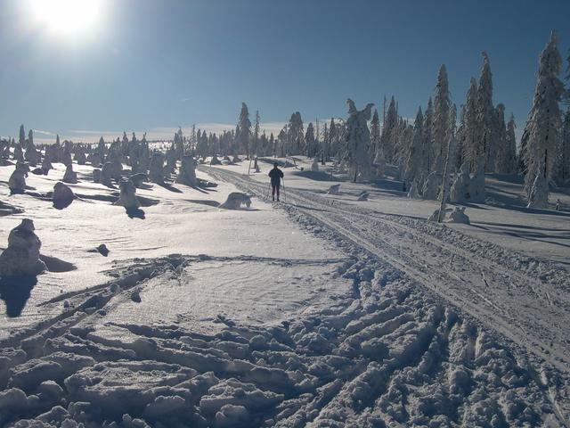

Bohaté možnosti zimních sportů v Jizerských horách lákají každoročně tisíce návštěvníků.


Nejbližší areál. 10 vleků a jeden pás, sjezdovky pro začátečníky i pokročilé.
6 vleků, široké sjezdovky lehké a střední obtížnosti vhodné pro rodiny, večerní lyžování.
Směr Josefův Důl. Tratě pro začátečníky, pokročilé i nejnáročnější lyžaře, mezi nejkvalitnějšími v Čechách.
Všechny sjezdovky jsou strojově upravovány a v případě nutnosti dosněžovány. Ve všech centrech je možnost populárního večerního lyžování.
Jizerské hory jsou bezesporu nejkvalitnějším střediskem pro běžecké lyžování. Strojově upravované stopy uspokojí i ty nejzdatnější. Jizerská magistrála vede přibližně 15 minut cesty od chaty.


